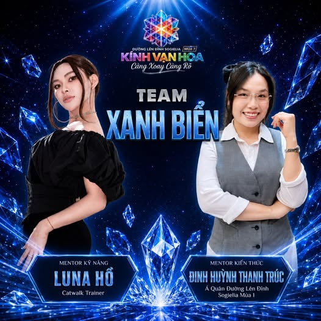
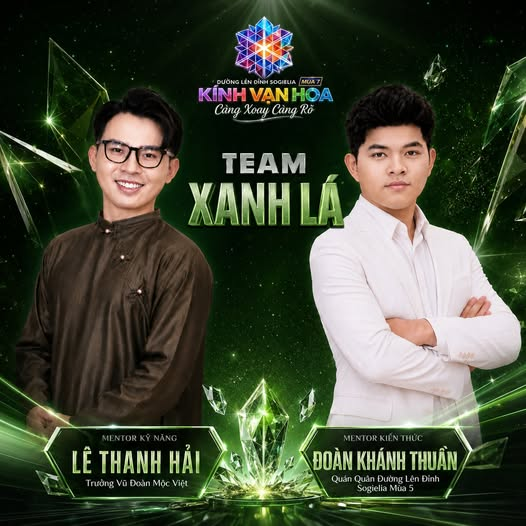
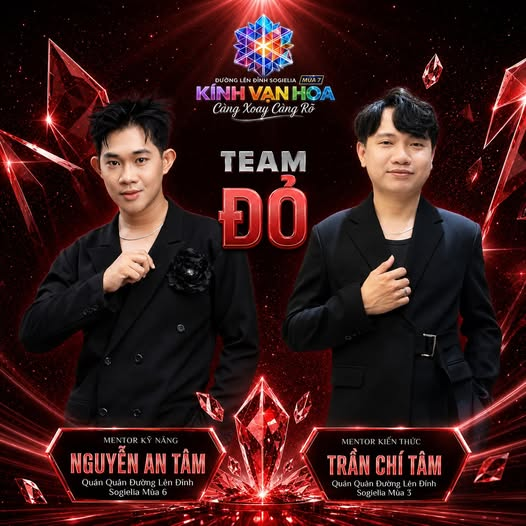
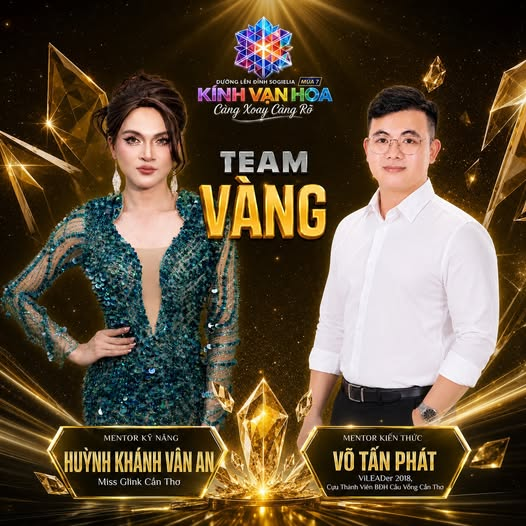

🔵 TEAM XANH BIỂN - NƠI BẢN LĨNH ĐƯỢC TÔI LUYỆN
🌊 Bình tĩnh - Thích ứng - Bứt phá, TEAM XANH BIỂN mang trong mình tinh thần của đại dương sâu rộng và không ngừng chuyển động.
Đồng hành cùng đội là:
💎 Mentor Kỹ năng Luna Hồ - Catwalk Trainer.
💎 Mentor Kiến thức Đinh Huỳnh Thanh Trúc - Á quân Đường Lên Đỉnh Sogielia Mùa 1.
Không ồn ào nhưng đầy nội lực, Team Xanh Biển là nơi các thí sinh được rèn luyện sự tự tin, khả năng thích ứng và bản lĩnh để đối mặt với những thử thách mới. Mỗi con sóng đều mang theo cơ hội học hỏi, mỗi hành trình đều là dịp để trưởng thành.
💙 Như đại dương rộng lớn, nơi đây luôn mở ra những chân trời mới cho những ai sẵn sàng khám phá và vượt qua giới hạn của chính mình.

🟢 TEAM XANH LÁ - NƠI NHỮNG BƯỚC TIẾN ĐƯỢC NUÔI DƯỠNG
🌱 Phát triển - Đổi mới - Bền bỉ, đó là những giá trị mà TEAM XANH LÁ mang đến trong hành trình Đường Lên Đỉnh Sogielia Mùa 7.
Đồng hành cùng các thí sinh là:
🍃 Mentor Kỹ năng Lê Thanh Hải - Trưởng Vũ đoàn Mộc Việt.
🍃 Mentor Kiến thức Đoàn Khánh Thuần - Quán quân Đường Lên Đỉnh Sogielia Mùa 5.
Như màu xanh của sự sống và hy vọng, Team Xanh Lá là nơi mỗi thành viên được khuyến khích phát triển từng ngày, học cách vượt qua giới hạn của bản thân và trưởng thành hơn qua từng thử thách.
💚 Thành công không đến từ những bước nhảy vọt, mà được tạo nên từ những bước tiến bền bỉ mỗi ngày.

🔴 TEAM ĐỎ - NƠI NGỌN LỬA BẢN LĨNH ĐƯỢC THẮP SÁNG
🔥 Mạnh mẽ - Quyết tâm - Bứt phá, đó chính là tinh thần của TEAM ĐỎ tại Đường Lên Đỉnh Sogielia Mùa 7.
Đồng hành cùng các thí sinh là bộ đôi Mentor đầy bản lĩnh:
✨ Mentor Kỹ năng Nguyễn An Tâm - Quán Quân Đường Lên Đỉnh Sogielia Mùa 6.
✨ Mentor Kiến thức Trần Chí Tâm - Quán Quân Đường Lên Đỉnh Sogielia Mùa 3.
Với kinh nghiệm thực chiến từ những người đã từng chạm tay đến đỉnh vinh quang, Team Đỏ không chỉ là nơi rèn luyện kỹ năng và kiến thức mà còn là nơi truyền cảm hứng để mỗi thí sinh dám bước ra khỏi vùng an toàn, chinh phục những thử thách mới và bùng cháy hết mình với mục tiêu của bản thân.
❤️ Nếu bạn mang trong mình tinh thần chiến binh và khát vọng vươn xa, Team Đỏ đang chờ bạn gia nhập!

🟡 TEAM VÀNG - NƠI TÀI NĂNG TỎA SÁNG
✨ Rực rỡ - Tự tin - Dẫn dắt, TEAM VÀNG chính là sắc màu của những người luôn sẵn sàng tỏa sáng theo cách riêng của mình.
Đồng hành cùng đội là:
🌟 Mentor Kỹ năng Huỳnh Khánh Vân An - Miss Glink Cần Thơ.
🌟 Mentor Kiến thức Võ Tấn Phát - ViLEADer 2018, Cựu Thành viên Ban Điều hành Cầu Vồng Cần Thơ.
Mang trong mình nguồn năng lượng tích cực cùng tinh thần không ngừng học hỏi, Team Vàng sẽ là nơi giúp các thí sinh phát huy điểm mạnh, xây dựng sự tự tin và khám phá những tiềm năng còn ẩn giấu bên trong bản thân.
💛 Mỗi người đều có ánh hào quang riêng. Điều quan trọng là bạn có dám để nó tỏa sáng hay không.